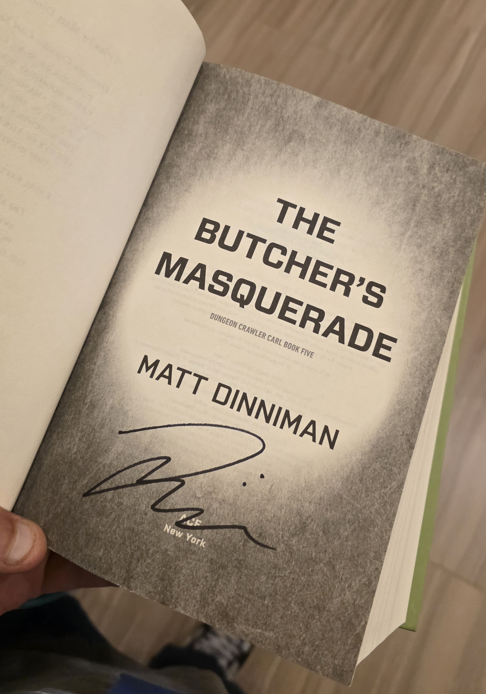

Genres I love
- Science Fiction
- Fantasy
- LitRPG
- Philosophy
Quick Links
Jump to book list
Goodreads
Email Me Book Recs!
|
My Book Corner!
I prefer Audiobooks because I do most of my reading listening either during my commute to/from work, whenver I go on long walks at work, anytime I do cardio, or whenever I paint minis.
Here are some of my favorite books I read this year

Matt Dinniman signed my favorite book of the Dungeon Crawler Carl series
My Top books of 2026
| Title |
Author |
Year |
Series Name |
Favorite Quote |
Link |
| Morning Star |
Pierce Brown |
2016 |
Red Rising Saga |
"I would have lived in peace but my enemies brought me war" |
GoodReads |
| Butcher's Masquerade |
Matt Dinniman |
2022 |
Dungeon Crawler Carl |
“And how is that machine greased? The universe’s four lubricants. Blood, tears, taxes, and lawyers.” |
GoodReads |
| A Short Stay in Hell |
Steven Peck |
2009 |
N/A |
“Finite does not mean much if you can't tell any practical difference between it and infinite.” |
Wikipedia |
| Dialectics of Nature |
Fredreich Engels |
1925 |
N/A |
"Let us not, however, flatter ourselves overmuch on account of our human conquest over nature. For each such conquest takes its revenge on us." |
GoodReads |
| Wretched of the Earth |
Frantz Fannon |
1961 |
N/A |
“Each generation must discover its mission, fulfill it or betray it, in relative opacity.” |
GoodReads |
Happy reading!
Text me your thoughts!
|